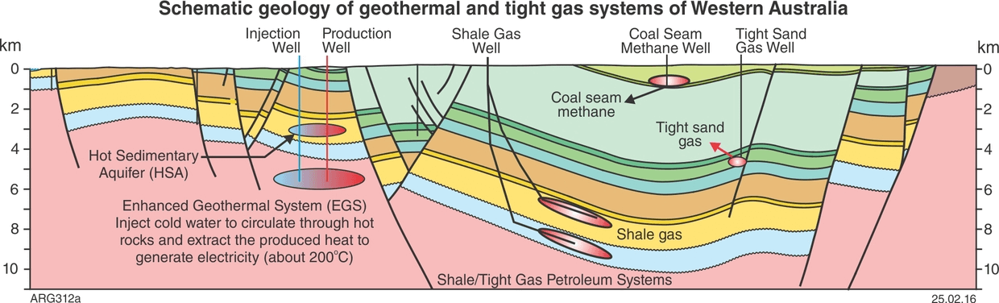
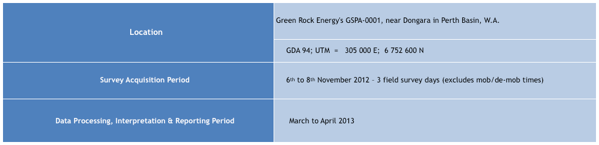
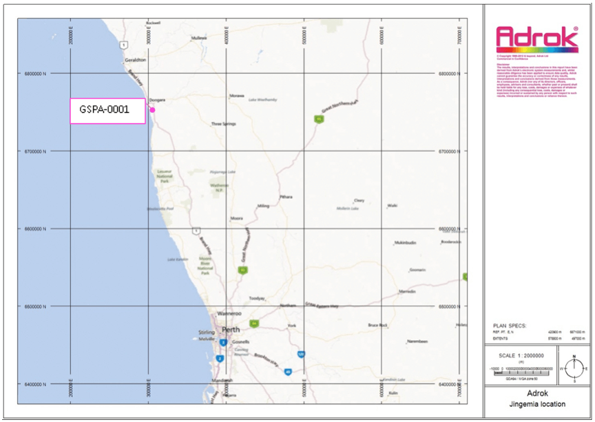
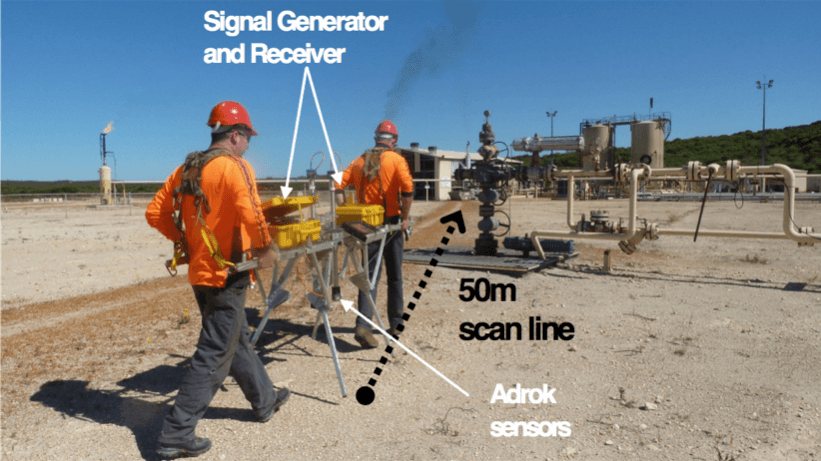
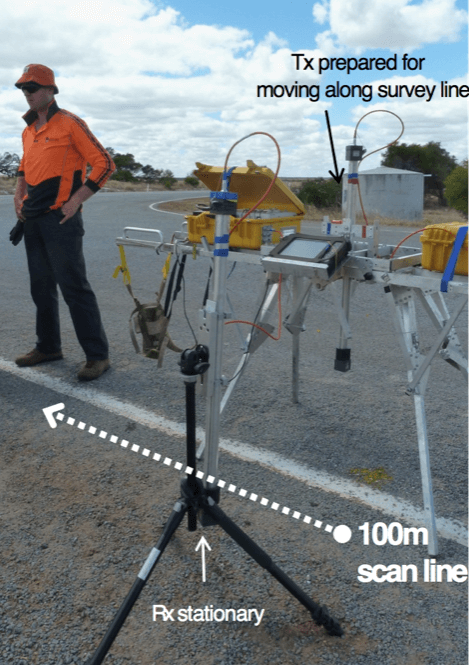
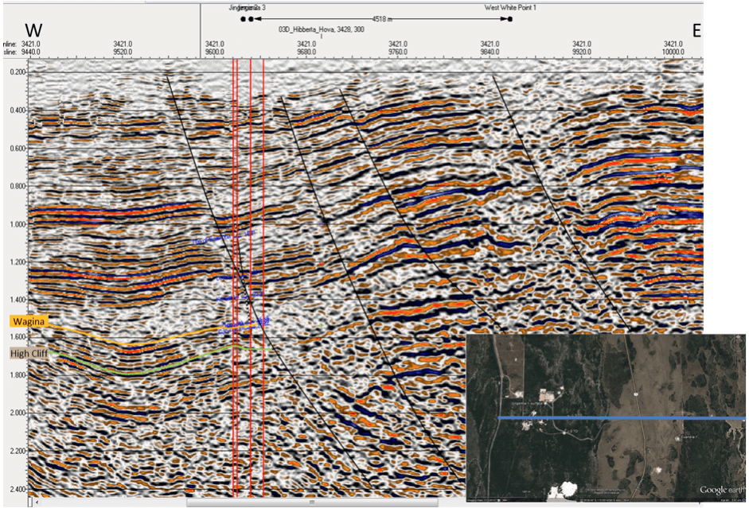
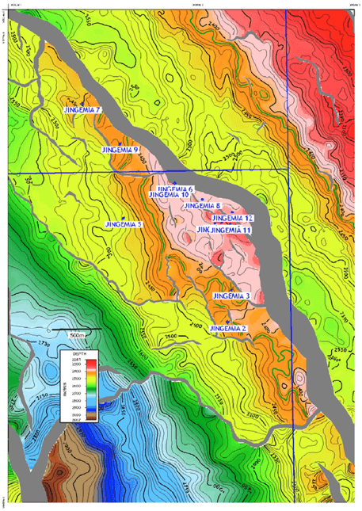
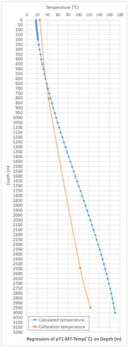
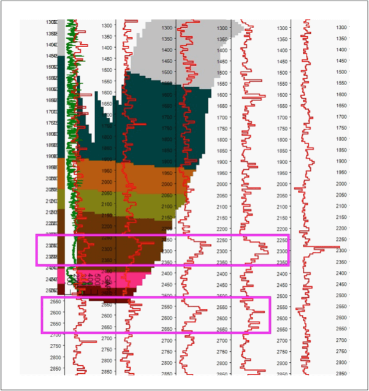

@@include('header.html', {
"level": "third"
})
@@include('section-tabs.html', {
"level": "third"
})
Temperature & Oil Measurement Greenrock: Jingemia oil field
nr. Dongara, Perth Basin, Western Australia
GSPA-001: VB1: Jingemia 1

Western Australia geology.


Background
- The overall objective of the survey is to test the applicability of Adrok’s ADR Scanner for the geological mapping of potential reservoirs and hot sandstone aquifers.
- To identity the Wagina Formation and High Cliff Sandstone
- The geothermal potential of the area appears to be primarily associated with the High Cliff sandstone (~3km depth)
- The formation was encountered in the petroleum exploration well Jingemia-1 and exhibited maximum porosities in excess of 20% and an associated corrected temperature of approximately 123°C.
- VB1 was planned at the collar of the vertical Jingemia-4 in order to intersect the bottom of Jingemia-1, and as a training site for the High Cliff sandstone and the oil bearing Wagina sandstone.

Figure 1: Typical Adrok Survey Field Acquisition.

Figure 1: Example of a WARR scan: one antenna stationary, the other moved down the scan line.

Seismic showing time to targets

Interpreted top of Wagina SST
Method

- Establish relationship using pT1 model
- A cubic regression of depth on temperature (R2 = 0.9734) was formed
- Use relationship in a predictive regression model where the independent variable, temperature, is predicted from the measured depth of each layer
- Note that the predictive model gives a higher regression relationship (R2=0.9995 over 97 degrees of freedom, SIG 0.1%)
Result
- Training based on relatively shallow, high temperature oil reservoirs to depth 600m which may explain the drift in predicted against calibration temperature
- Future improvement would be to train on deeper high temperature targets

Figure 1: Excerpt of E-ADR fence (red) showing peaks throughout Kockatea and Carynginia shales. Wagina Formation in Pink for Vbores JT-0 to JT-800.
@@include('footer.html')